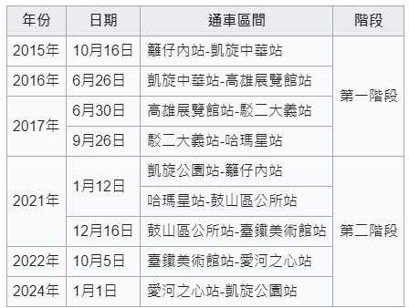
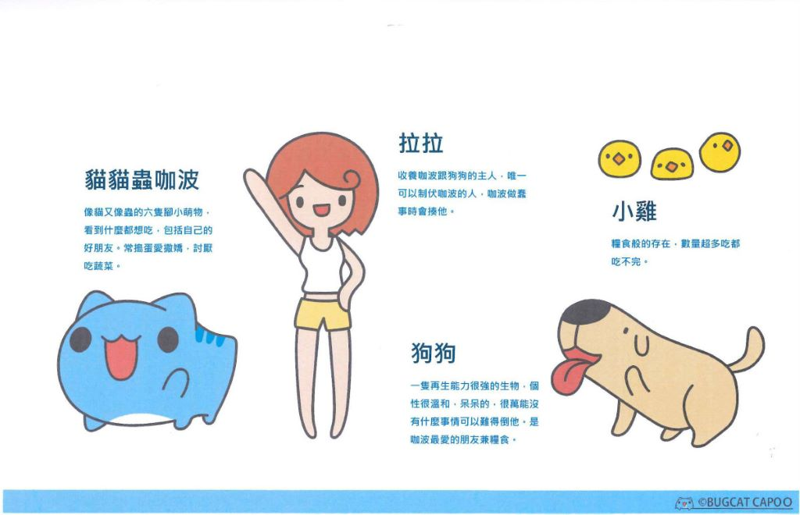
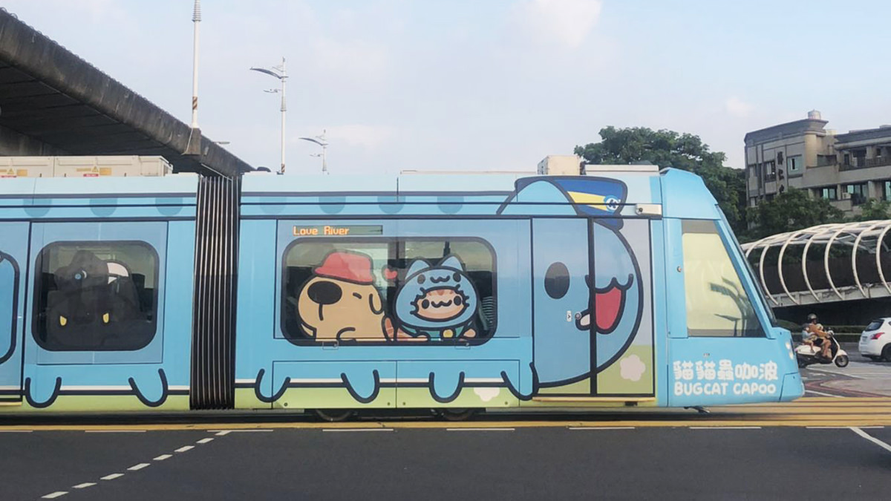

期末實作 學號:91135126 姓名:陳映諭
高雄鐵道種類
高雄咖波輕軌
高雄輕軌介紹
高雄捷運環狀輕軌，通稱高雄輕軌，原計畫名為高雄捷運臨港輕軌，
是台灣高雄市一座營運中的輕軌運輸系統，也是臺灣最早開始營運的輕軌路線。
屬於高雄捷運系統，為一環狀路線，全線位於舊高雄市區境內，也是亞洲新灣區建設的一部分及聯外交通。
該輕軌採取分階段通車，第一階段於2015年10月16日啟用，2024年1月1日全線通車。

拉亞•咖波
外表像貓又像蟲的卡通人物，牠是Facebook和Instagram上的網絡漫畫、
YouTube上的卡通短片、LINE和其他社交媒體上的貼圖的主人公。
於2014年由台灣藝術家亞拉所創造。

與咖波聯名車廂
「貓貓蟲咖波彩繪輕軌」是高雄捷運「揪咖來高雄」的其中一項活動，
除了在捷運「美麗島站」與「凱旋站」設置主題車站外，也特別彩繪了一台輕軌列車，
超萌的外觀也迅速成為了遊客的焦點
｜運行日期｜2023年7月15日～2024年2月29日
